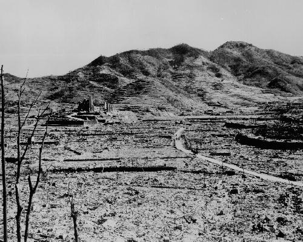
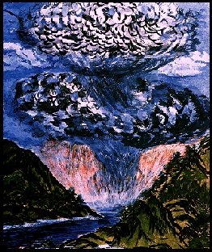

Hiroshima
e NagasakiHiroshima
e Nagasaki
Hiroshima
e NagasakiHiroshima
e NagasakiLa
prima bomba atomica all’Uranio, lanciata sopra il centro di Hiroshima,
incenerì 12 chilometri quadrati della città causando la morte
di 100 mila
uomini e altrettanti feriti, quasi tutti condannati a essere colpiti dal
cancro;
la seconda bomba atomica,
al plutonio, lanciata sopra Nagasaki provocò 40.000 morti e 70.000
ustionati gravi, anch’essi destinati a lunga agonia.
Ai morti e feriti vanno
aggiunte le devastanti conseguenze genetiche su migliaia di migliaia di
altre persone, su animali e piante dei territori circostanti prodotte dalle
esplosioni nucleari.